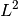
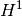

GetFEM++ Documentation contents¶
- User Documentation
- Introduction
- How to install
- Linear algebra procedures
- MPI Parallelization of GetFEM++
- Catch errors
- Build a mesh
- Build a finite element method on a mesh
- Selecting integration methods
- Mesh refinement
- Compute arbitrary terms - high-level generic assembly procedures
- Differences in execution time between high and low level generic assembly
- Overview of the weak form language syntax
- Some basic examples
- Derivation order and symbolic differentiation
- C++ Call of the assembly
- C++ assembly examples
- The tensors
- The variables
- The constants or data
- Test functions
- Gradient
- Hessian
- Predefined scalar functions
- User defined scalar functions
- Derivatives of defined scalar functions
- Binary operations
- Unary operators
- Parentheses
- Explicit vectors
- Explicit matrices
- Explicit tensors
- Access to tensor components
- Constant expressions
- Special expressions linked to the current position
- Print command
- Reshape a tensor
- Trace, Deviator, Sym and Skew operators
- Nonlinear operators
- Macro definition
- Explicit Differentiation
- Explicit Gradient
- Interpolate transformations
- Element extrapolation transformation
- Evaluating discontinuities across inter-element edges/faces
- Elementary transformations
- Xfem discontinuity evaluation (with mesh_fem_level_set)
- Storage of sub-expressions in a getfem::im_data object during assembly
- Compute arbitrary terms - low-level generic assembly procedures
- Some Standard assembly procedures (low-level generic assembly)
- Interpolation of arbitary quantities
- Incorporate new finite element methods in GetFEM++
- Incorporate new approximated integration methods in GetFEM++
- Level-sets, Xfem, fictitious domains, Cut-fem
- Interpolation of a finite element method on non-matching meshes
- Compute  and  norms
- Compute derivatives
- Export and view a solution
- A pure convection method
- The model description and basic model bricks
- The model object
- The brick object
- How to build a new brick
- How to add the brick to a model
- Generic assembly bricks
- Generic elliptic brick
- Dirichlet condition brick
- Generalized Dirichlet condition brick
- Pointwise constraints brick
- Source term bricks (and Neumann condition)
- Predefined solvers
- Example of a complete Poisson problem
- Nitsche’s method for dirichlet and contact boundary conditions
- Constraint brick
- Other “explicit” bricks
- Helmholtz brick
- Fourier-Robin brick
- Isotropic linearized elasticity brick
- Linear incompressibility (or nearly incompressibility) brick
- Mass brick
- Bilaplacian and Kirchhoff-Love plate bricks
- Mindlin-Reissner plate model
- The model tools for the integration of transient problems
- Small sliding contact with friction bricks
- Large sliding/large deformation contact with friction bricks
- Numerical continuation and bifurcation
- Finite strain Elasticity bricks
- Small strain plasticity
- ALE Support for object having a large rigid body motion
- Appendix A. Finite element method list
- Appendix B. Cubature method list
- References
- GetFEM++ Tutorial
- Description of the Project
- Introduction
- How to contribute / Git repository on Savannah
- The FEM description in GetFEM++
- Description of the different parts of the library
- Gmm library
- Dal library
- Miscellaneous algorithms
- Events management
- Mesh module
- Fem module
- Integ module
- MeshFem module
- MeshIm module
- Level-set module
- The high-level generic assembly module in GetFEM++
- The low-level generic assembly module in GetFEM++
- Model module
- Continuation module
- Interface with scripts languages (Python, Scilab and Matlab)
- Appendix A. Some basic computations between reference and real elements
- References
- Gmm++ Library
- Introduction
- Installation
- Matrix and Vector type provided by Gmm++
- Input and output with Harwell-Boeing and Matrix Market formats
- sub-vectors and sub-matrices
- Miscellaneous methods
- Basic linear algebra operations
- Solving triangular systems
- Dense LU decomposition
- Dense QR factorisation, eigenvalues and eigenvectors
- Iterative solvers
- Catch errors
- Interface with BLAS, LAPACK or ATLAS
- Interface with SuperLU
- How to use Gmm++ with QD type (double-double and quad-double)
- First steps with Gmm++
- Deeper inside Gmm++
- How to disable verifications
- MatLab Interface
- Introduction
- Installation
- Preliminary
- GetFEM++ organization
- Examples
- Draw Command reference
- Command reference
- gf_asm
- gf_compute
- gf_cont_struct
- gf_cont_struct_get
- gf_cvstruct_get
- gf_delete
- gf_eltm
- gf_fem
- gf_fem_get
- gf_geotrans
- gf_geotrans_get
- gf_global_function
- gf_global_function_get
- gf_integ
- gf_integ_get
- gf_levelset
- gf_levelset_get
- gf_levelset_set
- gf_linsolve
- gf_mesh
- gf_mesh_get
- gf_mesh_set
- gf_mesh_fem
- gf_mesh_fem_get
- gf_mesh_fem_set
- gf_mesh_im
- gf_mesh_im_get
- gf_mesh_im_set
- gf_mesh_im_data
- gf_mesh_im_data_get
- gf_mesh_im_data_set
- gf_mesh_levelset
- gf_mesh_levelset_get
- gf_mesh_levelset_set
- gf_mesher_object
- gf_mesher_object_get
- gf_model
- gf_model_get
- gf_model_set
- gf_poly
- gf_precond
- gf_precond_get
- gf_slice
- gf_slice_get
- gf_slice_set
- gf_spmat
- gf_spmat_get
- gf_spmat_set
- gf_util
- gf_workspace
- GetFEM++ OO-commands
- Python Interface
- SciLab Interface
- Introduction
- Installation
- GetFEM++ organization
- Draw Command reference
- Command reference
- gf_asm
- gf_compute
- gf_cont_struct
- gf_cont_struct_get
- gf_cvstruct_get
- gf_delete
- gf_eltm
- gf_fem
- gf_fem_get
- gf_geotrans
- gf_geotrans_get
- gf_global_function
- gf_global_function_get
- gf_integ
- gf_integ_get
- gf_levelset
- gf_levelset_get
- gf_levelset_set
- gf_linsolve
- gf_mesh
- gf_mesh_get
- gf_mesh_set
- gf_mesh_fem
- gf_mesh_fem_get
- gf_mesh_fem_set
- gf_mesh_im
- gf_mesh_im_get
- gf_mesh_im_set
- gf_mesh_im_data
- gf_mesh_im_data_get
- gf_mesh_im_data_set
- gf_mesh_levelset
- gf_mesh_levelset_get
- gf_mesh_levelset_set
- gf_mesher_object
- gf_mesher_object_get
- gf_model
- gf_model_get
- gf_model_set
- gf_poly
- gf_precond
- gf_precond_get
- gf_slice
- gf_slice_get
- gf_slice_set
- gf_spmat
- gf_spmat_get
- gf_spmat_set
- gf_util
- gf_workspace
- How to install from sources on Linux
- How to install from sources on MacOS X
- How to install GetFEM++ from sources on Windows
- What’s New in GetFEM++
- What’s New in GetFEM++ 5.3
- What’s New in GetFEM++ 5.2
- What’s New in GetFEM++ 5.1
- What’s New in GetFEM++ 5.0
- What’s New in GetFEM++ 4.3
- What’s New in GetFEM++ 4.2
- What’s New in GetFEM++ 4.1.1
- What’s New in GetFEM++ 4.1
- What’s New in GetFEM++ 4.0
- What’s New in GetFEM++ 3.1
- What’s New in GetFEM++ 3.0.1
- What’s New in GetFEM++ 3.0
- What’s New in GetFEM++ 2.0.2
- What’s New in GetFEM++ 2.0.1
- What’s New in GetFEM++ 2.0
- What’s New in GetFEM++ 1.7
- What’s New in GetFEM++ 1.6
- What’s New in GetFEM++ 1.5
- What’s New in GetFEM++ 1.4
- What’s New in GetFEM++ 1.3
- What’s New in GetFEM++ 1.2
- What’s New in GetFEM++ 1.1
- What’s New in GetFEM++ 1.0
- Documenting
- Glossary
- About these documents
- Reporting Bugs in GetFEM++
- Legal information
- History and License
- Some related links
- Jean Garrigues courses (in french)
- Internet Finite Element Resources
- MUMPS: a MUltifrontal Massively Parallel sparse direct Solver
- SuperLu: Sparse Gaussian Elimination on High Performance Computers
- Some project using GetFEM++ and/or Gmm++
- Examples of publications based on GetFEM++
- An evaluation of Gmm++ performance
- GetFEM++ Mailing Lists
- GetFEM++ in action ...
- Matlab source code for the tripod
- Matlab source code for the Stokes equation example
- Matlab source code for the Helmholtz equation example
 Lagrange elements on simplices
Lagrange elements on simplices

次のトピックへ
Download
Main documentations
- GetFEM++ User documentation
- Python Interface
- Matlab Interface
- Scilab Interface
- Gmm++
- GetFEM++ project